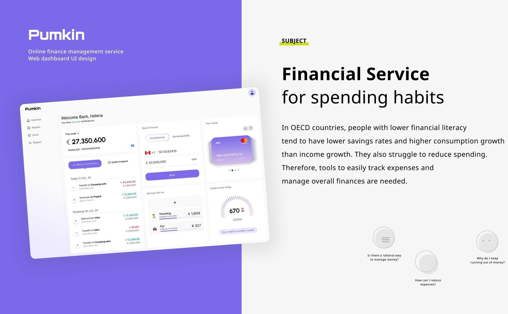
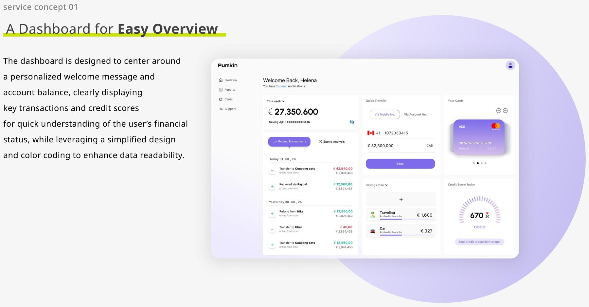
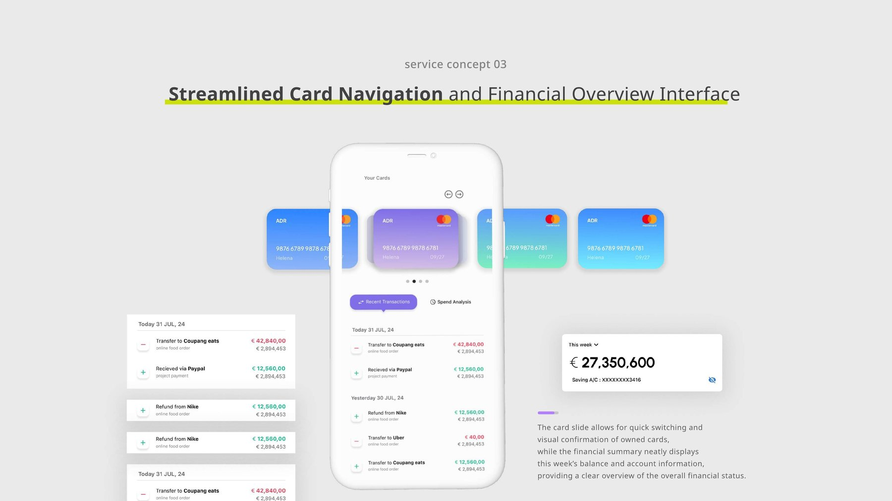
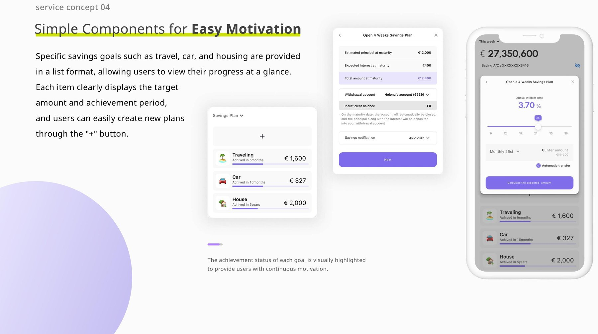

A friendlier way to manage spending habits, built for people who dread opening their banking app.

Pumkin is a personal project: an online finance management service that lets people manage bank account statements and credit card statements in one centralized platform — designed to address the fragmented interfaces of the tools that already exist.

"Managing money shouldn't feel
like homework."
In OECD countries, people with lower financial literacy tend to have lower savings rates and higher consumption growth than income growth — and they struggle to reduce spending. Existing services don't integrate bank account statements and credit card statements, leaving people to track their finances across scattered, disconnected apps.
My hypothesis: providing detailed card statements and cash management together, in one place, can help people actually improve their savings and spending habits — not just observe them.
The primary audience is individual users who recognize the need for better financial management but are frustrated by fragmented interfaces. Three service concepts guided the design: managing everything together, simplified navigation, and integrated insights across spending and saving.
The dashboard centers around a personalized welcome message and account balance, clearly displaying key transactions and credit scores for a quick read on financial status, using a simplified design and color coding to enhance readability.
Users can set up and manage savings plans by intuitively adjusting interest rate and duration with a slider, with monthly auto-transfer options and notification settings to make saving close to effortless.
A card slide allows quick switching and visual confirmation of owned cards, while a financial summary neatly displays the week's balance and account information for a clear overview of overall financial status.

Specific savings goals — travel, car, house — are shown in a list, so users can view their progress at a glance. Each item clearly displays the target amount and achievement period, and the achievement status is visually highlighted to keep motivation going.

Pumkin pushed me to design for an emotion — the mild dread of checking your bank balance — rather than just a task. Bright colors and soft curves did more for engagement here than any dashboard density could.